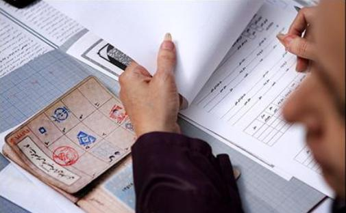

پذيرش > سایت نوشته ها > سهمخواهی زنان اصولگرا


 سهمخواهی زنان اصولگرا سهمخواهی زنان اصولگرا
5 اردیبهشت 1392 - مریم حسینخواه - نسخه قابل چاپ
در شرایطی که اصلاحطلبان تمام توجه خود را معطوف به معرفی نامزد مورد نظرشان برای انتخابات ریاست جمهوری کردهاند، زنان سیاسی اصولگرا درپی چانهزنی برای حضور نامزدهای مورد نظرشان در انتخابات شوراهای شهر و روستا هستند.
اعظم حاجیعباسی، دبیرکل جامعه زینب ۱۹ فروردین ماه جاری از تهیه فهرست نامزدهای مورد نظر احزاب زنان اصولگرا خبر داده و گفته است که فهرست ۴۰ نفرهای از نامزدهای مورد نظرشان در انتخابات شوراها را به “جبهه پیروان خط امام و رهبری” ارائه دادهاند.
این اقدام از آن جهت قابل توجه است که در تمامی ۳۳ سال گذشته، سهم زنان از نهادهای مهم تصمیمگیرنده و دارای قدرت همواره اندک بوده و در بهترین حالت که دوره هفتم مجلس شورای اسلامی باشد حضور آنان فقط به ۴ درصد (۱۲ نماینده زن از مجموع ۲۸۲ نماینده) رسیده است.
فریبا داودی مهاجر، فعال حقوق زنان در پیوند با تاثیر حضور فعالانه زنان اصولگرا در انتخابات میگوید: “حتی اگر این زنان نگاه جنسیتی به مسائل نداشته باشند، در زمانی که تنها سه درصد از آنها در پستهای ارشد حضور دارند، میتواند به معنای شکستن تابوهایی باشد که حضور زنان را تبرج میدانند و همهجانبه با حضور زنان در صحنه سیاسی مخالفت میکنند.”
به گفته این فعال اجتماعی، “صرف حضور زنان در جامعه و نهادهایی همچون شورای شهر و روستا، مجلس و وزارت میتواند یک عمل در مقابل دیدگاهی باشد که زن را خانهنشین، مطیع و تحت کنترل میخواهد و همه جانبه به دنبال تفکیک جنسیتی است”.
این نگاه سهمخواهانه فعالان زن اصولگرا به انتخابات شوراها اگرچه با درنظر داشتن عملکرد آنان در مجلس شورای اسلامی، چندان امیدوارکننده نیست و در چندین سال اخیر بارها و بارها شاهد موضعگیریهای مردسالارانه نمایندگان زن در مجلس و مدیران زن در نهادهای اجرایی بودهایم، اما نفس این حضور فارغ از نوع عملکردشان، میتواند علامت ورود ممنوع را از جاده سیاست کنار زند و راه را برای حضور قشرهای مختلف زنان در آینده باز کند.
همچنین میتوان این امید را داشت که با شکسته شدن این سد، زنان حساس به تبعیضهای جنسیتی نیز وارد عرصههای مدیریتی شوند و تمامی احزاب سیاسی فارغ از نوع گرایششان خود را موظف به ارتقای مشارکت سیاسی زنان بدانند.
تلاش زنان اصولگرا (اگر به ثمر بنشیند) البته ریشه در فعالیتهایی دارد که در چندین دهه اخیر فعالان حقوق زنان برای عمومی کردن خواستههای زنان از جمله حضورشان در عرصههای قدرت داشتهاند.
فریبا داودی مهاجر نیز این حضور فعالانه زنان اصولگرا و حتی خواست زنان اصلاحطلب مبنی بر مشارکت اجتماعی و سیاسی را از تاثیرات فعالان حقوق زن در جامعه میداند و معتقد است: “مقالات، تظاهرات، وبسایتها و کلیه فعالیتهای فعالان جنبش زنان در سالهای اخیر منتهی به خواست زنان با هر دیدگاهی برای حضور در عرصه اجتماعی شده است.”
او اضافه میکند: “در واقع حکومت در حرکتی عکسالعملی مجبور شد به زنان حداقل همسو با خودش فضای بیشتری بدهد. حضور این زنان اصولگرا در عرصه سیاسی میتواند زمینه آتی حضور زنان در سیاستگذاری عمومی را فراهم کند.”
فارغ از نگاه و نقش زنان اصولگرا به مسئله انتخابات، فعالان جنبش زنان چه نقشی را در این عرصه میتوانند ایفا کنند؟
فریبا داودی مهاجر که سابقه فعالیت در یک حزب سیاسی را نیز داشته است، با تاکید بر تاثیر تلاشهای فعالان حقوق زنان برای هموار کردن مسیر فعالیت سیاسی زنان، مخالف موضعگیری مستقیم جنبش زنان درباره مقولاتی همچون انتخابات است و میگوید که انتخابات شوراها نه از جهت کاندیدا شدن و نه رای دادن، میدان بازی فعالان حقوق زنان نیست.
او با تاکید بر اینکه این پرهیز از سیاست با “فعالیت بر اساس مسئولیت سیاسی” تفاوت دارد، ادامه میدهد که فعالان حقوق زنان نباید هویت جمعیشان را با فراز و فرودهای سیاسی یا با اهداف سیاسی معطوف به قدرت، گره بزنند. هرچند این دیدگاه لزوماً به معنای مطرح نکردن مطالبات مبتنی بر برابری جنسیتی از سوی فعالان جنبش زنان و فشار آنها بر احزاب و نامزدها برای توجه به این مطالبات نیست.
در این میان فعالان زن اصلاحطلب که برخی از آنها در جنبش زنان نیز فعالیت داشتهاند، میتوانند موضعگیری صریحتری نسبت به انتخابات داشته باشند.
از دیدگاه داودی مهاجر، ” از آنجا که زنان اصلاحطلب با هویت اصلاحطلبی خود و با یک استراتژی سیاسی مبتنی بر دستیابی به قدرت فعالیت میکنند، میتوانند نگاهی دیگر به انتخابات داشته باشند.”
او با اشاره به اینکه عمل سیاسی لزوماً به معنای شرکت در انتخابات نیست، اضافه کرد: “بسیاری مواقع شرکت نکردن در انتخابات نیز عمل سیاسی است و میتواند در صورت چانهزنی متدولوژیک منجر به سهم در قدرت شود.”
با همه اینها شکستن سدهایی که دربرابر دستیابی زنان به قدرت و نهادهای تصمیمساز وجود دارد، چندان آسان نیست، اما شورایهای شهر و روستا که عمری کوتاهتر از سایر نهادهای قدرت در ساختار سیاسی ایران دارند، میتوانند فرصت مناسبی باشند که این ترازوی نابرابر کمی میزان شود و زنان نیز بتوانند شانس حضور در نهادهای قدرت را داشته باشند.
امید داشتن به این نهاد نوپا نه از آن رو است که تا کنون زنان درصد بالایی از کرسیهای شورا را به دست آوردهاند. در دوره اول شوراها (اسفند ۱۳۷۷) تنها ۸ دهم درصد از اعضای کل شورای شهر و روستای ایران زن بودند. در انتخابات دور دوم (اسفند ۱۳۸۱) این حضور به یک و نیم درصد رسید و در سومین دوره شوراها (آذر ۱۳۸۵) نیز فقط یک و سه دهم درصد از زنان توانستند به جلسات شورا وارد شوند، اما محلی بودن این انتخابات، کمتر سیاسی بودن آن و تمرکز بر نیازهای روزمره زندگی در برنامههای شوراها این شانس را به زنان میدهد که در این عرصه که سهم قدرت سیاسی در آن کم رنگتر است، بتوانند این شانس را داشته باشند که مهارتهای مدیریتی خود را تمرین کنند و از آن به عنوان نقطه پرشی برای ورود به عرصههای مدیریتی جدیتر استفاده کنند.
این تمرین اما فقط با خواست فردی زنان، قابلیت اجرایی ندارد و همچنان نیازمند آن است که احزاب سیاسی، رسانهها و حتی دولت با درنظر داشتن یک نگاه بلند مدت، به جای آنکه کرسیهای شورا را نیز به عنوان ابزاری برای تقسیم قدرت سیاسی نگاه کنند، آن را پروسهای برای تمرین دموکراسی ببینند و در همین راستا فضا را برای حضور بیشتر زنان در این نهاد فراهم کنند.
این برنامهای است که به نظر میرسد زنان فعال در احزاب سیاسی اصولگرا، آن را با وجود همه اختلاف دیدگاههای اساسی که با فعالان حقوق زنان مستقل از حکومت دارند، در دستور کار خود قرار دادهاند.
رادیو زمانه
ارسال به
بالاترین
،
توییتر
،
فریندفید
،
فیسبوک
در همين بخش :
 یک خبر تلخ؟ یک قانونشکنی؟ یک تصمیم بخشنامهای جدید؟ یک خبر تلخ؟ یک قانونشکنی؟ یک تصمیم بخشنامهای جدید؟
چرا بایست به سکسوالیته پرداخت؟ / نفیسه آزاد
آزارجنسی خانگی؛ «قربانی» نه، «نجات یافته»
زنان، بزرگترین بازندگان بهار عرب
سانسور از دیدگاه جنسیتی/الهه امانی
ديگر بخش ها :
طرح یک میلیون امضا
|
مقالات
|
سایت نوشته ها
|
اخبار
|
گزارش كمپين
|
گفت و گو
|
علیه سکوت
|
كوچه به كوچه
|
نامه های شما
|
گزارش ویژه
|
گفتگو با اعضا
|
ویژه سالگرد کمپین
|
تصویر برابری
|
دل آرام علی
|
تریبون
|
مقالات
|
تاریخ شفاهی
|
خارج از چارچوب
|
کتابخانه
|
درباره کمپین
|
کمپین در شهرها
|
کمپین در بند
|
صدای تغییر
|
ویژه 22 خرداد
|
لایحه حمایت از خانواده
|
گالری
|
عشا مومنی
|
امیر یعقوبعلی
|
خدیجه مقدم
|
راحله عسگری زاده و نسیم خسروی
|
پروین اردلان،جلوه جواهری، مریم حسین خواه، ناهید کشاورز
|
زینب پیغمبرزاده
|
سعیده امین، سارا ایمانیان، محبوبه حسین زاده، ناهید کشاورز و همایون نامی
|
احترام شادفر
|
نسیم سرابندی زاده،فاطمه دهدشتی
|
وبلاگ مهمان
|
پرونده خرم آباد
|
دستگیری ها
|
مریم مالک
|
پرستو اللهیاری
|
مهرنوش اعتمادی
|
سمیه رشیدی
|
Other Languages
|
همراهان
|
«فراخوان کمپین ده روز با بهاره هدایت»
| English
|